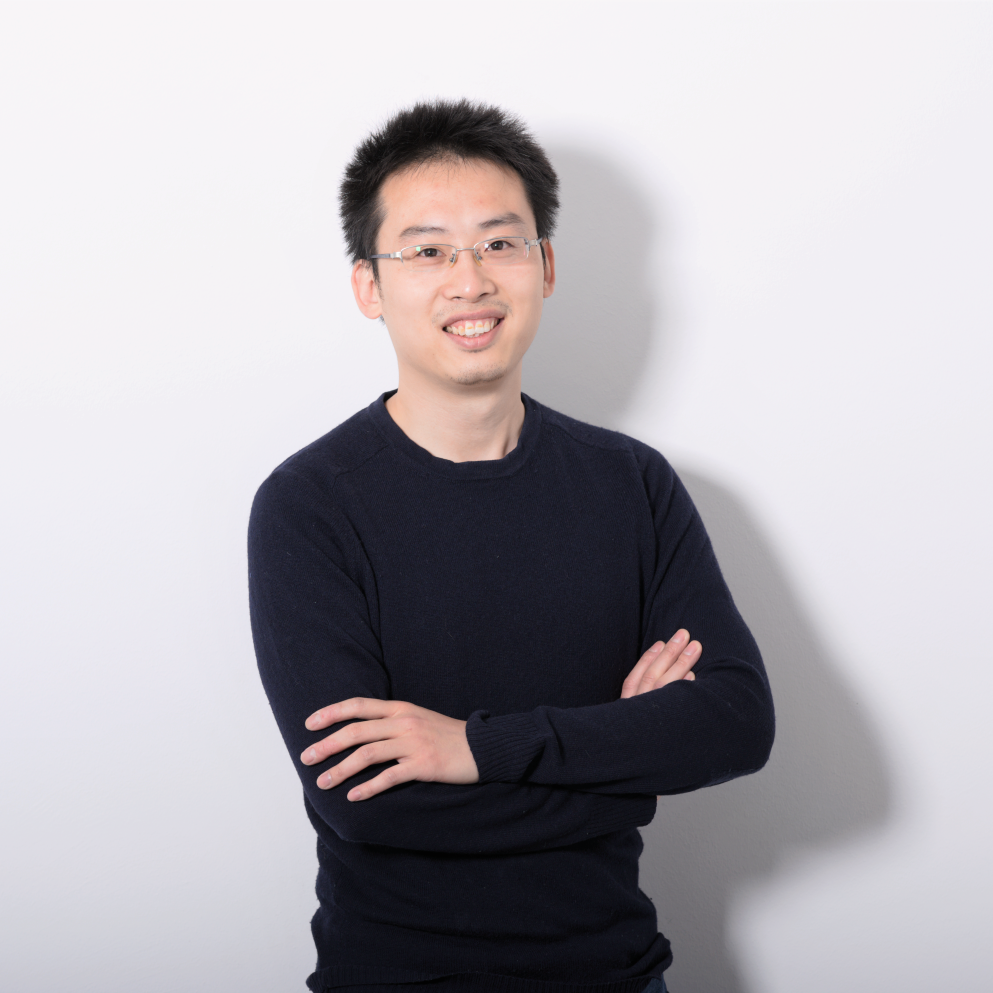

    <!-- <body> -->
        <!-- Start Container-->
        <div class="container">
            <!-- row -->
            <div class="row">
            <!-- =========================================
                           SIDEBAR   
            ==========================================-->
                <!-- Start Sidebar -->
                <aside class="col l4 m12 s12 sidebar z-depth-1" id="sidebar">
                    <!--  Sidebar row -->
                    <div class="row">                      
                        <!--  top section   -->
                        <div class="heading">                            
                            <!-- ====================
                                      IMAGE   
                            ==========================-->
                            <div class="feature-img">
                                <a href="http://einsteinliu.github.io/cv/index.html"></a> 
                            </div>                                                    
                            <!-- ========================================
                                       NAME AND TAGLINE
                            ==========================================-->
                            <div class="title col s12 m12 l9 right">   
                                <h2>Wangxin Liu</h2> <!-- title name -->
                                <span>Computer Vision Engineer</span>  <!-- tagline -->
                            </div>                         
                        </div>
                         <!-- sidebar info -->
                        <div class="col l12 m12 s12 sort-info sidebar-item">
                            <div class="row">                               
                                <!-- <div class="col m12 s12 l3 icon"> icon
                                   <i class="fa fa-user"></i>
                                </div> -->                                
                                <div class="col m12 s12 l12 info"> <!-- text -->
                                    <div class="section-item-details">
                                        <p class="hyphenate" style="padding: 5px 0px 0px 25px" id="wrap">As an algorithm engineer with 5 years of experience, I focused on bridging the gap between theory and product in the field of computer vision. With the help of my training in mathematics, I get a deep insight into problems. <br><br>
From the real-time simulation engine project, I gained the knowledge of developing low-level Linux modules for real-time boards and learned to schedule multi-thread distributed system. <br><br>
In my off-hours, I enjoy learning and tracking the latest developments of deep learning applied to computer vision.<br> Image recognition and classification are my main focuses.</p>
                                    </div>             
                                </div>
                            </div>         
                        </div>
                        <!-- MOBILE NUMBER -->
                        <div class="col l12 m12 s12  mobile sidebar-item">
                            <div class="row">                                
                                <div class="col m12 s12 l3 icon">
                                    <i class="fa fa-phone"></i> <!-- icon -->
                                </div>                                
                                <div class="col m12 s12 l9 info">
                                    <div class="section-item-details">
                                        <div class="personal">
											<span>Mobile</span>
                                            <h4><a href="tel:+4917692624655">0176926246xx</a></h4> <!-- Number --> 
                                        </div>
                                    </div>
                                </div>
                            </div>             
                        </div>
                        <!--  EMAIL -->
                        <div class="col l12 m12 s12  email sidebar-item last-item">
                            <div class="row">                                
                                <div class="col m12 s12 l3 icon">
                                    <i class="fa fa-envelope"></i> <!-- icon -->
                                </div>                                
                                <div class="col m12 s12 l9 info">
                                    <div class="section-item-details">
										<div class="personal"> 
											<span>Personal</span>
                                            <h4><a href="mailto:wangxin.liu.tum@gmail.com">wangxin.liu.tum@gmail.com</a></h4> <!-- Email -->
                                        </div>
                                    </div>
                                </div> 
                            </div>          
                        </div>					
                    </div>   <!-- end row -->
                </aside><!-- end sidebar -->
	
                

                <section class="col s12 m12 l8 section">
                    <div class="row">
					
					<!-- ========================================
                              Skills 
                        ==========================================-->
                        <div class="section-wrapper z-depth-1">                           
                            <div class="section-icon col s12 m14 l1">
                                <i class="fa fa-check"></i>
                            </div>
                            <div class="custom-content col s14 m16 l10"> 
                                <h2>Skills</h2>
								<h3>Programming Languages</h3>
								<ul class="list-meta inline-list">
									<li><a class="tag"><span class="term">C++</span><span class="count">11</span></a></li>
									<li><a class="tag"><span class="term">C#</span></a></li>
									<li><a class="tag"><span class="term">C</span></a></li>
									<li><a class="tag"><span class="term">Python</span></a></li>
									<li><a class="tag"><span class="term">Matlab</span></a></li>
									<li><a class="tag"><span class="term">VBA</span></a></li>									
									<li><a class="tag"><span class="term">Java</span></a></li>
									<li><a class="tag"><span class="term">Html</span></a></li>
									<li><a class="tag"><span class="term">CSS</span></a></li>
									<li><a class="tag"><span class="term">JavaScript</span></a></li>
								</ul>
								
								<h3>SDK/Frameworks</h3>
								<ul class="list-meta inline-list">
									<li><a class="tag"><span class="term">OpenCV</span></a></li>
									<li><a class="tag"><span class="term">OpenGL</span></a></li>									
									<li><a class="tag"><span class="term">TensorFlow</span></a></li>
									<li><a class="tag"><span class="term">Accord.Net</span></a></li>
									<li><a class="tag"><span class="term">LaTex</span></a></li>
									<li><a class="tag"><span class="term">SciPy</span></a></li>
									<li><a class="tag"><span class="term">.Net</span></a></li>
									<li><a class="tag"><span class="term">Qt</span></a></li>
									<li><a class="tag"><span class="term">WPF</span></a></li>
									<li><a class="tag"><span class="term">MFC</span></a></li>									
									<li><a class="tag"><span class="term">Beautifulsoup</span></a></li>
								</ul>
								
								<h3>Knowledge Background</h3>
								<ul class="list-meta inline-list">
									<li><a class="tag"><span class="term">3D Computer Vision</span></a></li>
									<li><a class="tag"><span class="term">Pattern Recognition</span></a></li>
									<li><a class="tag"><span class="term">Machine Learning/Deep Learning</span></a></li>
									<li><a class="tag"><span class="term">Distributed Real-Time System</span></a></li>
									<li><a class="tag"><span class="term">Modeling/Simulation</span></a></li>
									<li><a class="tag"><span class="term">Multithreaded Programming</span></a></li>
									<li><a class="tag"><span class="term">Game/Simulation Engine</span></a></li>
									<li><a class="tag"><span class="term">Image Reconstruction(CT/Ultrasound/Visual)</span></a></li>
								</ul>
								<h3>Tools</h3>
								<ul class="list-meta inline-list">
									<li><a class="tag"><span class="term">Visual Studio</span></a></li>
									<li><a class="tag"><span class="term">Visual Studio Code</span></a></li>
									<li><a class="tag"><span class="term">Matlab</span></a></li>
									<li><a class="tag"><span class="term">Qt Creator</span></a></li>
									<li><a class="tag"><span class="term">Vim</span></a></li>																	
									<li><a class="tag"><span class="term">Git</span></a></li>
									<li><a class="tag"><span class="term">TFS</span></a></li>	
									<li><a class="tag"><span class="term">Microsoft Office</span></a></li>									
								</ul>
								
                            </div>                          
                        </div>
						
						<!-- =========================================
								Work experiences
					==========================================-->
                        <div class="section-wrapper z-depth-1">                            
                            <div class="section-icon col s12 m14 l1">
                                <i class="fa fa-magic"></i>
                            </div>
                            <div class="custom-content col s14 m16 l10">
                                <h2>Projects</h2>
                                <div class="custom-content-wrapper">
                                    <h3>Multi View 3D Reconstruction <span>@e.Sigma Systems GmbH</span></h3>
									<span>OpenCV/Qt/OpenGL/Camera Calibration/3D Reconstruction</span>
									<p></p>
									<ul>
										<li>Implemented a camera calibration algorithm based on camera images</li>
										<li>Developed an intuitive way to reconstruct a 3D scene from photo series</li>
										<li>Constructed a 3D modelling environment supports creating, editing, saving, reading and rendering 3D scene</li>
										<li>Release the software as a product with a USB-Dongle based licence</li>
									</ul>
                                </div>
                                <div class="custom-content-wrapper">
                                    <h3>3D Object Pose Estimation <span>@e.Sigma Systems GmbH</span></h3>
                                    <span>Matlab/Optimization/Pose Estimation</span>
									<p></p>
									<ul>
                                    <li>Developed an API to model and calibrate a real word object for a virtual-reality environment</li>
									<li>Developed a template-matching algorithm to estimate the pose of an object in real time</li>
									</ul>
                                </div>
                                <div class="custom-content-wrapper">
                                    <h3>Virtual Shooting Simulator <span>@e.Sigma Systems GmbH</span></h3>
                                    <span>OpenCV/Embedded Linux/Camera Programming/Camera Calibration/<br>Machine Learning/Tracking&Recognition</span>
									<p></p>
									<ul>
									<li>Developed a camera calibration algorithm with the help of servomotors</li>
                                    <li>Recognise and track multiple aiming targets</li>
									<li>Designed and constructed a tracking system exchanging data via Network</li>
									</ul>
                                </div>
								<div class="custom-content-wrapper">
                                    <h3>Ultra-low Latency Distributed System <span>@e.Sigma Systems GmbH</span></h3>
                                    <span>Hardware Driver/Linux Kernel/Real-Time System/<br>Multithreaded Programming</span>
									<p></p>
									<ul>
									<li>Optimized the driver of board hardware on Real-Time Linux</li>
									<li>Improved a whole distributed real-time system by optimizing its scheduling strategies</li>
                                    <li>Involved in a Linux kernel module development</li>									
									</ul>
                                </div>							
								<div class="custom-content-wrapper">
                                    <h3>Distributed Simulation Engine <span>@e.Sigma Systems GmbH</span></h3>
                                    <span>Game Engine/Network Programming</span>
									<p></p>
									<ul>
									<li>Tested and debugged the network-based data exchange core of a distributed simulation engine</li>
									<li>Developed some plugins and modules for a distributed simulation engine</li>									
                                    <li>Developed a HID device driver for a virtual object in simulation engine</li>	
									</ul>
                                </div>
								<div class="custom-content-wrapper">
                                    <h3>Panoramic View <span>@e.Sigma</span></h3>
                                    <span>OpenCV/Computer Vision/Image Processing</span>
									<p></p>
									<ul>
									<li>Implemented an automatic image pairing and stitching algorithm based on an image set</li>
									<li>Developed an image blending algorithm by pixel-wise adjusting the brightness and contrast</li>											
									</ul>
                                </div>
								<div class="custom-content-wrapper">
                                    <h3>RFID Sensor based Localization <span>@e.Sigma Systems GmbH</span></h3>
                                    <span>Sensor Data Processing</span>
									<p></p>
									<ul>
									<li>Developed an API to monitor RFID sensors and locate them</li>	
									</ul>
                                </div>
								<div class="custom-content-wrapper">
                                    <h3>3D CT Image Reconstruction <span>@Klinikum Rechts der Isar</span></h3>
                                    <span>Machine Learning/Optimization/Image Reconstruction</span>
									<p></p>
									<ul>
									<li>Proposed a mathematical model of a commercial medical CT</li>	
									<li>Built a Poisson distribution based probabilistic reconstruction framework</li>	
									<li>Developed an optimization algorithm to raise the reconstruction convergence speed</li>									
									<li>Achieved a better reconstruction quality than the most advanced commercial CT from the same data set</li>
									</ul>
								</div>
                            </div>                            
                        </div>
						
						<!-- =========================================
								Work experiences
					==========================================-->
                        <div class="section-wrapper z-depth-1">                            
                            <div class="section-icon col s12 m14 l1">
                                <i class="fa fa-suitcase"></i>
                            </div>
                            <div class="custom-content col s14 m16 l10">
                                <h2>Work Experience</h2>
								<div class="custom-content-wrapper">
                                    <h3>Software Developer <span>@e.Sigma Systems GmbH</span></h3>
                                    <span>May/2012 - present </span>
									<p></p>
									<ul>
                                    <li>Single view image based real scene 3D reconstruction, algorithm designer and main developer of the final released product<br></p></li>
									<li>3D model calibration and pose estimation library, worked alone as mathematical modeller and algorithm developer</p></li>
									<li>Embedded Linux-based tracking system, responsible for the software part, including algorithm design and coding</p></li>
									<li>Network-based distributed simulation engine, worked in a big team, responsible for some modules, including core modules</p></li>
									<li>Ultra-low latency real-time distributed system, low-level Linux kernel development, optimzation of a big system</p></li>
									</ul>
                                </div>
								
								<div class="custom-content-wrapper">
                                    <h3>Research Assistant <span>@Klinikum Rechts der Isar</span></h3>
                                    <span>Jul/2010 - Apr/2012 </span>
									<p></p>
									<ul>
                                    <li>3D CT Reconstruction Framework Development </li>
									</ul>
                                </div>
								
								<div class="custom-content-wrapper">
                                    <h3>Research Assistant <span>@Lehrstuhl CAMP/AR, Fakultät Informatik, TU München</span></h3>
                                    <span>Jun/2010 - Feb/2011 </span>
									<p></p>
									<ul>
                                    <li>Human Airway Segmentation from 3D CT Image </li>
									</ul>
                                </div>
								
                                <div class="custom-content-wrapper">
                                    <h3>Research Assistant <span>@NarvisLab, Lehrstuhl CAMP/AR, TU München</span></h3>
                                    <span>Feb/2010 - Aug/2010 </span>
									<p></p>
									<ul>
                                    <li>Phase Aberration Correction for Ultrasound Image Reconstruction</li>
									</ul>
                                </div>
								 
                            </div>                            
                        </div>				
						<!-- ========================================
                         Education 
                        ==========================================-->
                        <div class="section-wrapper z-depth-1">
                            <div class="section-icon col s12 m14 l1">
                                <i class="fa fa-graduation-cap"></i>
                            </div>
                            <div class="custom-content col s14 m16 l10">
                                <h2>Education </h2>
                                <div class="custom-content-wrapper">
                                    <h3>Master in Biomedical Computing <span>@TU München, Informatik</span></h3>
                                    <span>Oct/2009 - Apr/2012 GPA 1.8 </span>
									<p></p>
									<ul>
                                    <li>3D Computer Vision, Machine Learning in the field of 3D/2D medical image reconstruction and pattern recognition.</p></li>
									<li>Object and System Model Generation for X-ray Computed Tomography (Master Thesis, <span>Note 1.3</span>)</p></li>
									</ul>
                                </div>
                                <div class="custom-content-wrapper">
                                    <h3>Bachelor in Biomedical Engineering <span>@Shanghai Jiao Tong University</span></h3>
                                    <span>Sep/2005 - Jul/2009 </span>
									<p></p>
									<ul>
                                    <li>Wireless ECG Signal Monitoring and Processing System (Bachelor Thesis)</p></li>
									</ul>
									<p>Accepted</p>
									<!--li><p>Accepted</p></li-->
                                </div>
                            </div>
                        </div>
						
                    </div><!-- end row -->
                </section><!-- end section -->
            </div> <!-- end row -->
        </div>  <!-- end container -->
        